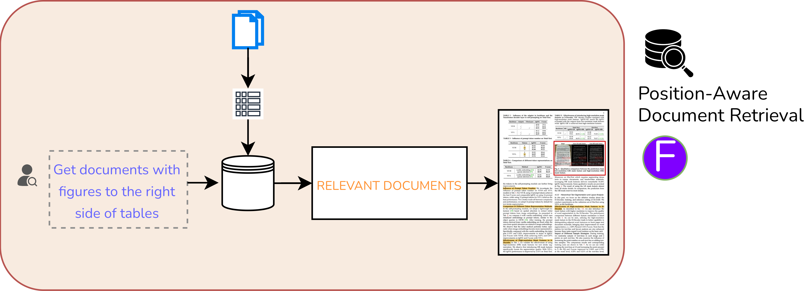

REPLICA: An Agentic Framework for Visually Faithful Document Reconstruction
Rebuild any page as HTML that still looks like the page.
1 BharatGen · 2 IIIT Hyderabad · * Equal contribution
replica-agents.github.io


ink on paper
made of DOM
0.93
VFS — visual fidelity,
VLM-as-a-judge
0.86
OS_all — overall,
against 0.58 for GPT-5
0.86
GPS — global position,
LPS 0.73 local
+39pts
Qwen3-VL-8B + REPLICA: 0.86
vs direct Qwen3-VL-30B: 0.47
WHY FID-HTML?
A usable page, not a transcript. Content, hierarchy, layout, and styling remain available in the DOM.
What gets lost
Existing converters keep the words and drop the page.


Compare this with the large source/Fid-HTML pair above: REPLICA preserves the page as a page; a conventional converter retains words but loses its structure.
Fid-HTML
Six dimensions of fidelity
Textual content word- and block-level text
Hierarchical structure nested <div> containers
Semantic tags <li> <table> <tr> <td> + classes
Positional information absolute global, relative local
Styling and metadata size, colour, weight via inline CSS
Figures and backgrounds layered into the DOM, with alt text
| Format | R.O. | Tables | Figures | Hier. | BBoxes | V.F. |
|---|---|---|---|---|---|---|
| Markdown | P | × | P | P | × | × |
| LaTeX | P | ✓ | ✓ | ✓ | P | ✓ |
| Qwen-HTML | P | ✓ | P | P | × | ✓ |
| Fid-HTML (Ours) | ✓ | ✓ | ✓ | ✓ | ✓ | ✓ |
Selected Fid-HTML capabilities · P = partial

How we measure
5,000
documents
15+
languages
20+
document categories
100%
expert human-annotated
- TE
- Text extraction — CRR, WRR
- LS
- Logical structure — NTED, TEDS, CDM
- PS
- Physical structure — GPS global + LPS local, IoU-matched, area-normalised F1
- VF
- Visual fidelity — VFS, VLM-as-a-judge vs human ground truth
Overall = (TE + LS + PS + VF) / 4
Pearson r > 0.8 vs seven expert annotators, 100 documents.
Results
| Method | Text extraction | Logical structure | Physical structure | Visual fidelity | Overall | ||
|---|---|---|---|---|---|---|---|
| WRR | CRR | NTED | LPS | GPS | VFS | OS_all | |
| Marker | 0.68 | 0.82 | 0.61 | 0.19 | 0.34 | 0.74 | 0.53 |
| Docling | 0.40 | 0.49 | 0.62 | 0.17 | 0.26 | 0.55 | 0.38 |
| Qwen3-VL | 0.66 | 0.79 | 0.59 | 0.22 | 0.30 | 0.43 | 0.47 |
| Gemini-2.5-Pro | 0.67 | 0.42 | 0.56 | 0.14 | 0.31 | 0.82 | 0.47 |
| GPT-5 | 0.65 | 0.79 | 0.49 | 0.21 | 0.43 | 0.86 | 0.58 |
| REPLICA (Ours) | 0.88 | 0.93 | 0.20 | 0.73 | 0.86 | 0.93 | 0.86 |
Best in every column · NTED lower is better · 16 methods in the paper
What it unlocks


Limitations
No cross-page consistency yet — spanning tables and figures can fragment.
Precise font identification remains unresolved.
REPLICA makes Qwen3-VL-8B (0.86) stronger than direct Qwen3-VL-30B (0.47) on the overall score.